GILE DOCUMENTATION
Tools & Utilities
Specialized utility items, movement gear, and magical devices designed to help you navigate and survive in your world.
1. Flutterer & Fluttering Enchantment
A mobility utility that grants enhanced jump height and slow-falling "glides".
 Flutterer
Flutterer lifting and slow falling abilities demonstration.
Flutterer
Flutterer lifting and slow falling abilities demonstration.
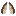
Can be crafted from one Pearlescent Chain, 2 Moth Wings, dropped from Moth and 2 Dust that can be dropped from Ender Flies and from Glitters. Flutterer has 324 durability. Consumes it on every ability use. Ability key is SPACE by default, but can be configured.
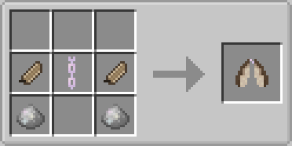
The Flutterer (Chest Slot Item)
- Equipped in the chest armor slot in place of a standard chestplate.
- Pressing SPACE (or custom rebindable key) performs an elevated jump slightly higher than 1 block.
- Applies Slow Falling automatically while descending, accompanied by particle trail effects.
- Repairable: Yes.
Fluttering Enchantment
- Purchased directly from the Wisher villager (Wish Mechanic).
- Can be applied to any chestplate armor piece, granting the exact same jump boost, slow-falling effect, and keybind functionality while draining the armor's durability.
2. Grappling Hook
A mobility tool that fires a line of rope upon right-clicking, pulling the player toward the target location.
 Grappling Hook Use
Player pulling using a grappling hook.
Grappling Hook Use
Player pulling using a grappling hook.
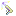
Craft it merging one Void Slimeball, 2 Star Fragments and 2 Wish Ingots. Grappling Hook can really simplify your travelling. Especially in a mountain region or in The End dimension. Has 282 durability. Default range is 32 blocks. Range enchantment can be used to increase it by 16 blocks per level.
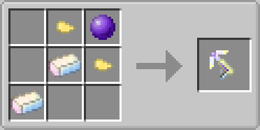
Mechanics & Rules
- Base Range: 32 blocks. Targeting block must be solid and non-collidable.
- Texture Dynamic: Swaps textures when deployed and actively pulling.
- Canceling Rope: Can be canceled manually by looking straight down, sneaking, or automatically after 15 seconds as a anti-bug safety measure.
- Enchantments: Compatible with the Range enchantment (+16 blocks per level). Can be acquired from the Wisher villager (see Wishing Mechanic).
- Repairable: Yes.
3. Heart of Emergency
A life-saving relic that automatically safeguards you from lethal damage.
 Heart of Emergency
Heart of Emergency saves player on critical HP.
Heart of Emergency
Heart of Emergency saves player on critical HP.
- Trigger: Activates automatically when stored anywhere in your inventory if player health drops to 25% or below.
- Buffs Granted: Instant Health, Regeneration, and Resistance for several seconds.
- Restrictions: Has an internal cooldown and does not stack.
- Uncraftable: Found in loot chests within Ancient Ruins, End Cities, or purchased from the Wisher villager (Wish Mechanic).
4. Jelly on a Stick
A specialized creature control tool crafted using a standard Fishing Rod and Jelly (harvested in the Ghostly Thickets biome).
- Function: Allows players to mount and steer the floating Hovering Ghost entity.
- Repairable: Yes.
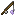
Jelly on a Stick is used to control Hovering Ghost riding it. Has 25 durability. When the Jelly is eaten, you get back the fishing rod, so you can re-craft the stick easily and continue your trip.
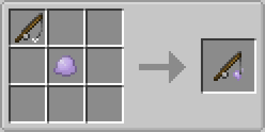
5. Size Manipulation Wands (Shrinker & Enlarger)
Two powerful wands capable of manipulating entity and player scales. Both share similar crafting recipes and equal durability values.
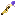
Craft it from 1 Star positioned on bottom, 2 Jerboa's Tails and 2 Crystals that you can get with some chance from the Moon Sand. Reduces target size to 0.20x. Has 191 durability. Can shrink the player using it, or any entity its looking at. Player receives a custom Infinite Invisibility ability while holding it.
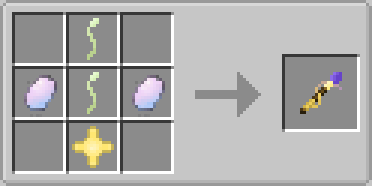
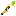
Craft it from 1 Star positioned on top, 2 Jerboa's Tails and 2 Crystals that you can get with some chance from the Moon Sand. Increases target size to 1.80x. Has 191 durability. Can enlarge the player using it, or any entity its looking at. Player receives a custom Lunar Stomp ability while holding it.
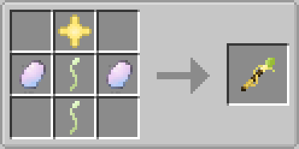
Controls & Controls Mechanics
| Action | Target | Effect |
|---|---|---|
| Right-Click | Entity (up to 32 blocks) | Applies Shrinking/Enlarging effect for 5 minutes. |
| Shift + Right-Click | Self | Applies Shrinking/Enlarging effect to the player for 5 minutes. |
| Close Right-Click | Active Target | Cancels active size effect on the target. |
| Shift + RC (Looking Straight Down) | Self | Cancels active size effect on the player. |
| Opposite Wand Use | Active Target / Self | Subtracts 5 minutes from the current active effect. |
Attribute Scaling & Ability Mechanics (V Key)
Size changes scale player attributes proportionally: Max Health, Jump Height, Speed, Block Reach, and Entity Interaction Range. Survival default effect level is Level IV (commands support alternate levels, with each level adding/subtracting 20% size).
- Shrink Effect Active: Pressing V toggles Infinite Invisibility (press again to disable).
- Enlarge Effect Active: Pressing V triggers Lunar Stomp, dealing AoE damage and applying Slowness to surrounding entities in a small radius (has cooldown).
6. Warp Clock
A stackable temporal device (up to 16) used to bind and teleport to specific sign coordinates.
 Warp Clock
Warp Clock warp setting & using it demonstration.
Warp Clock
Warp Clock warp setting & using it demonstration.
Shapeless fabrication of 4 Chrono Gears using 1 Phasma and 1 Void Slimeball. It is needed to craft Warp Clock and to use it.
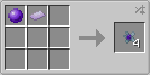
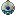
Craft it from 1 Chrono Gear, 1 Ender Pearl, 1 Void Slimeball, 2 Moth Wings and 4 Phasma, dropped from Ender Flies, or from any of the ghosts from Ghostly Thickets. Can be used to set warp points on signs. Can be used multiple simultaniously. Consumes Chrono Gears for each teleportation.
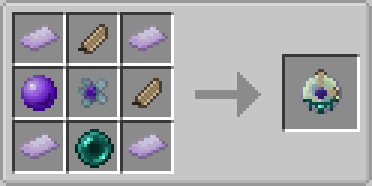
Usage Steps
- Binding: Right-click on any standard or hanging sign. The sign text will save to the item tooltip as a warp point, displaying a confirmation message.
- Teleporting: Right-click anywhere else to instantly teleport to the saved sign coordinates. Consumes 1 Chrono Gear per warp.
- Clearing Target: Shift + Right-Click on any block to clear the saved warp point.
7. New Enchantments

Range
Level: I – IV
Increases the maximum range of compatible utility items, allowing them to interact with targets from farther away. On normal tools and weapons increases block and entity interaction range attribute.
Fluttering
Level: I
Grants chestplates the ability to perform an elevated jump and automatically apply Slow Falling while descending, with no need to wear Flutterer and be protected instead.